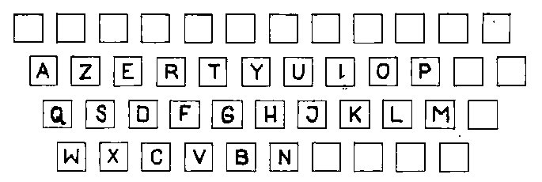
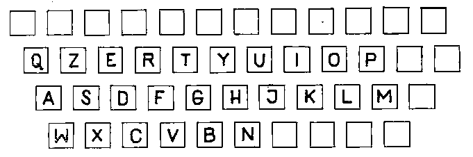
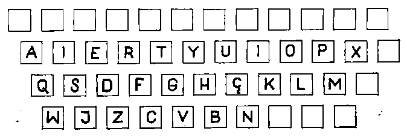
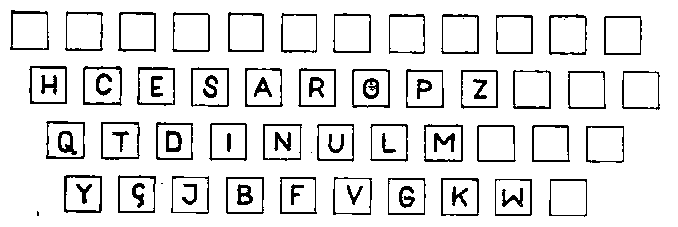
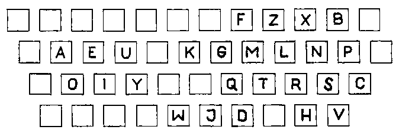
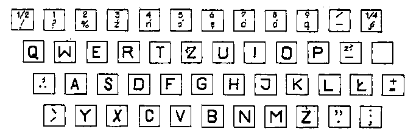
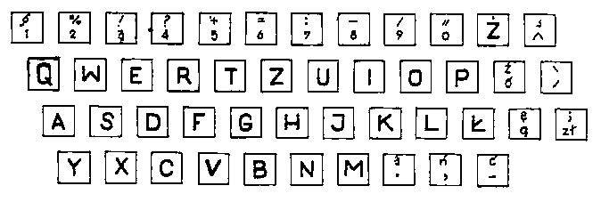

International
InternationalPolski układ klawiatury cz. II.
2012-02-20 | autor: flamenco108Taki bałagan nie mógł trwać wiecznie, przecież klienci wpadają w pomięszanie, co właściwie mają kupować - kiedy produkt ma tyle indywidualnych cech wyróżniających, zamiast się cieszyć, wpadali w panikę. Zatem w 1888 roku odbył się w Toronto zlot producentów maszyn do pisania i ustalono na nim 2 standardy międzynarodowe, oparte o dokonania Sholesa:
ten
i ten
Jak widać, dla różnej maści dziwaków, wynalazców i innowatorów pozostawiono całkiem sporo nieoznaczonych klawiszy. Był to również uprzejmy ukłon w stronę tej milczącej większości na świecie, która posługuje się alfabetem łacińskim, ale z własnymi, różnymi literkami. Abstrahujemy od maszyn do pisaniapo rosyjsku, grecku, arabsku, hebrajsku, persku, ormiańsku, gruzińsku… O chińskim w ogóle nie ma co mówić, to temat na oddzielny wpis.
Jednakowoż, albowiem, ponieważ, w innych, niektórych krajach podniesiono larum na zamach na narodowy charakter języka, na cechy szczególne i w ogóle. I tak Francuzi zrobili sobie własny układ,

którym posługiwali się też Albańczycy. Włosi wynaleźli własny,

Turcy też nie pozostali w tyle, szczególnie po reformach Kemala Paszy Ataturka,

a Portugalczycy ośmielili się nawet zmienić układ tak, że w opisie nie dało się już powiedzieć “erty”, ale czyżby ukryli w układzie nazwisko jego twórcy?

Jak zobaczyłem układ belgijski, zrozumiałem, dlaczego Uderzo i Goscinny robią sobie z Belgów jaja w komiksie “Asterix i Obelix u Belgów”:

Tymczasem we wzmiankowanej wyżej, naszej dzielnie stawiającej opór przeciwnościom niespotykanym w innych systemach Polsce z pewną taką nieśmiałością podjęto pomysł, że może odważylibyśmy się sami montować czcionki na importowanych z bardziej uprzemysłowionych regionów świata maszynach? Jak nie wiadomo, co zrobić, to najlepiej zrobić debatę. A jak nie wiadomo, kto ma coś zrobić, to najlepiej powołać w tym celu komitet. Nie będę cytował nazwy komitetu, była długa.
Najsampierw ustalono układ klawiatury na podstawie przedwojennej normy:

Bo lepszych pomysłów na razie nie było.
Żmudne badania częstotliwości występowania głosek i liter w zapisie języka polskiego prowadzone były niezależnie przez kilka instytucji - i wszystkie do dziś pozostały ściśle tajne, w szczególności wyniki tych badań. W efekcie my z No-qankiem musieliśmy robić własne badania. I tak pieniądze podatników nie zostały zmarnowane po raz kolejny.
Równolegle prowadzono badania, wyobraźcie sobie, sprawności palców. Z badań tych wyszło, że palce układają się w hierarchii:
- wskazujący i środkowy prawej ręki
- wskazujący i środkowy lewej ręki
- serdeczny i mały prawej ręki
- serdeczny lewej ręki
- mały lewej ręki Przy czem rozkład sprawności z podziałem na ręce w procentach wynosi:
- prawa ręka = 53%
- lewa ręka = 47%
Ciekawe, czy w badaniach uwzględniono mańkutów, bardzo w to wątpię, wtedy uważano szmajaństwo za odmianę lekkiej niepełnosprawności.
W maju 1951r. przystąpiono oficjalnie do prac nad projektem polskiego układu klawiatury. Jak to w Polsce, na jednym układzie się nie skończyło i nie skończy, chciałbym tutaj podkreślić. Np. Główny Instytut Pracy przedstawił swój projekt:
dziwny, no nie?
Minimaliści utrzymywali, że w układ międzynarodowy wnikać trzeba możliwie jak najmniej, bo przecież tak często się zdarza, że trzeba klepać w innych językach, a wtedy dedykowany układ nie będzie pasował do obcego języka. No, ciekawe, a czemuż to nie przeszkadza im, kiedy układ QWERTY nie pasuje do polskiego? Tak czy owak przedstawili, zasłaniając się Polskim Komitetem Normalizacyjnym taki oto projekt, który wszedł do normy numer PN-58F-02000:

Jak to norma, pamiętają o nim dziś tylko bardzo niektórzy. Problem dedykowanej klawiatury dla elity piszących bezwzrokowo pozostał wciąż otwarty. Aż (wróćmy do początku tego artykułu) w 1958r. inż Janusz Kaczmarek z tuzami polskiej stenografii wprost ze Stowarzyszenia Stenografów, Sekretarek i Maszynistek, Alfonsem Znanieckim i Henrykiem Bańskim przedstawili projekt, który bez zatrzymywania się powędrował ad acta, czyli na wieczyste zesłanie:
to jeszcze raz ja, ten z samej góry
I moglibyśmy spocząć na Laurach, Werandach, czy jak tam się nazywają nasze żony, po tym wiekopomnym odkryciu, gdyby nie drobny problem: otóż maszyny mechaniczne odeszły bezpowrotnie w przeszłość, a zatem i problem niepełnosprawności małych paluszków również, bo małe paluszki czują się świetnie na klawiaturze komputera, a przynajmniej moje i przynajmniej ten najmniej sprawny, czyli lewy (czy wspominałem już, że jestem szmaja?).
Tymczasem układ ten faworyzuje, czy też wręcz przeciwnie, obciąża ponad miarę, palce silniejsze i dłuższe, kosztem maluczkich. Jednakowoż z tabelki zobaczyć można, że niewspółmiernie (a tu posłużę się też własnym szkiełkiem i okiem oraz własnym doświadczeniem) obciążone są palce wskazujące, bowiem mają do obsłużenia po 6 klawiszy, gdy pozostałe paluszki zaledwie po 3. Linii cyfrowej nie policzyłem, mniejsza o nią.
Ośmieliłem się zatem opracować na bazie powyższego układ inny, na razie tylko z grubsza poprawiający komfort nieszczęsnych palców wskazujących, w toku eksperymentów sprawdzimy, jak bardzo. Może trzeba będzie przestawić jeszcze parę literek, żeby je bardziej odciążyć.
pl.SSiM
Jak widać, rozsunąłem samogłoski. W ten sposób (na przykładzie E i A) znalazły się po palcem wskazującym i środkowym, nie zaś obie pod palcem wskazującym. Podobnie uczyniłem w rzędach górnym i dolnym, na dodatkowe miejsca pracy palca wskazującego delegując rzadziej występujące spółgłoski.
pl.SSiM po naciśnięciu klawisza Shift
W języku polskim, choć może się to wydać dziwne, skoro bez przerwy “szeleścimy”, najczęściej występują samogłoski. Zatem należy im się odpowiednie miejsce. W powyżej przedstawionej klawiaturze w rzędzie, gdzie zwykle występują cyfry, pozostawiłem wg życzenia tuzów stenografii i autorów oryginalnego układu, różne literki typowo polskie. Jednakowoż, po naciśnięciu klawisza AltGr oraz kombinacji AltGr+Shift, wyłaniają się znaki przypisane do typowej klawiatury amerykańskiej.
pl.SSiM po naciśnięciu AltGr czyli Prawego Altu
pl.SSiM po naciśnięciu AltGr oraz Shift
Inne znaki, jakie można znaleźć na klawiaturze, wrzuciłem kierując się zasadą, że od przybytku głowa nie boli, a przecież pisząc w naturalnym dziś standardzie UTF-8 możemy posługiwać się ładniejszymi niż te z ASCII znakami pisarskimi, np. otwarcie i zamknięcie cudzysłowu, zamiast tzw. dumb quotes.
Powtarzające się przypisania znaków w różnych miejscach podyktowane jest wygodą piszącego, ale pod wpływem fachowców oraz zwykłego lenistwa może to zostać zmienione w przyszłości. Teraz czeka mnie wygenerowanie tej klawiatury i testy. Ciekawe, jak to się robi?
2012-02-20 autor: flamenco108